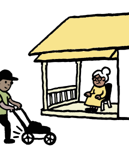
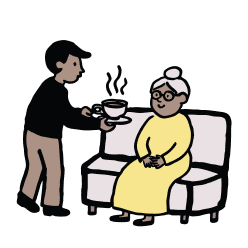

GrannyHelp
Slogan : Petits services. Grands liens.
Choix principal : chaleureux, direct, coherent avec les assets deja produits.
Projet SOL - Designer UX
Une application web mobile qui rapproche les jeunes, les personnes agees et leurs accompagnateurs autour de petits services du quotidien.
Slogan retenu : Petits services. Grands liens.
01 / Marque
Slogan : Petits services. Grands liens.
Choix principal : chaleureux, direct, coherent avec les assets deja produits.
Slogan : Un coup de main au coin de la rue.
Alternative : plus locale et francophone, a garder si le nom anglais pose question.
02 / Charte graphique
#F6DC69
#28382F
#F8F7F1
#E8EDDF
#F3DFD2
Georgia pour les titres, Segoe UI pour l'interface et les formulaires.
Simple, rassurant, non infantilisant. On parle de voisinage, de choix et d'entraide.
03 / Assets renommes



04 / Personas

Jeune volontaire qui veut rendre service pres de chez lui pendant ses temps libres.
Accompagnatrice qui organise une aide pour sa mere sans decider a sa place.

Beneficiaire qui veut rester autonome, etre aidee simplement et garder du lien humain.
05 / Value Proposition Canvas
| Profil | Jobs | Pains | Gains | Reponse GrannyHelp |
|---|---|---|---|---|
| Accompagnateur | Trouver une aide, coordonner, suivre. | Manque de temps, incertitude, peur d'exclure le proche. | Aide fiable, suivi clair, proche rassure. | Profil proche, contexte "Pour Madeleine", filtres et suivi. |
| Jeune volontaire | Rendre service localement, choisir son engagement. | Besoins flous, trajets longs, horaires incompatibles. | Se sentir utile, rencontrer, choisir des missions simples. | Demandes filtrees, details du service, disponibilites visibles. |
06 / Site vitrine
| Bloc | Contenu |
|---|---|
| Produit | Application web mobile de mise en relation locale. |
| Services | Courses, menage leger, bricolage simple, aide informatique, presence de voisinage. |
| Tarifs | Aucun paiement obligatoire. Pourboire libre et facultatif. |
| Partenaires | Associations, mairies de quartier, residences seniors, structures etudiantes. |
| FAQ | Smartphone non obligatoire pour l'aine, role accompagnateur, confiance, pourboire libre. |
| Legal | CGV, mentions legales, confidentialite et contact a finaliser avant lancement. |